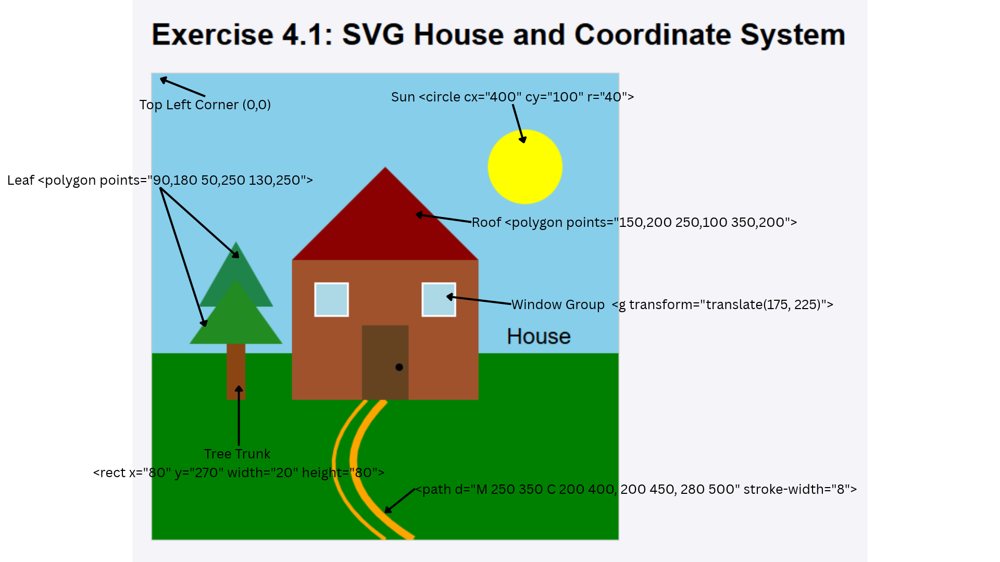

| Element | Before (Generated SVG Code) | After | Key Differences |
|---|---|---|---|
| Canvas Dimensions | viewBox="0 0 1000 1000" |
viewBox="0 0 500 500" |
Scaled to a compact 500×500 coordinate grid for web layout. |
| Grass Ground | <rect> (y=608, h=392)Fill: #00800B |
<rect> (y=300, h=200)Fill: #008000 |
Proportions adapted to 500x500 canvas; adjusted green shade. |
| Sun | <circle> (cx=808, cy=200, r=82) |
<circle> (cx=400, cy=100, r=40) |
Positioned in top-right corner with scaled 40px radius. |
| Winding Path | 2 <path> elementsStroke: #FFB300, width: 12 |
2 <path> elementsStroke: #FFA500, width: 8 & 4 |
Used asymmetrical stroke widths (8px & 4px) to add depth to path edges. |
| Tree Design | Deciduous Tree: 3 overlapping <circle> elements |
Pine Tree: 1 <rect> trunk + 2 overlapping <polygon> triangles |
Redesigned canopy using geometric triangular polygons for an evergreen look. |
| House Body & Roof | Body: Rect (302×405, 404×307, #8B4513)Roof: Polygon ( #CD661D) |
Body: Rect (150×200, 200×150, #A0522D)Roof: Polygon ( #8B0000) |
Customized color scheme with dark red roof and adjusted aspect ratio. |
| Door & Knob | Door: 80×164 (#A04020)Knob: Radius 10 |
Door: 50×80 (#654321)Knob: Radius 4 |
Centered scaled door relative to main house frame. |
| Grouped Windows (<g>) | 2 direct <rect> elements (Ungrouped) |
<g id="windows-group" fill="#ADD8E6" stroke="#000000" stroke-width="2"> |
Encapsulated windows in <g> applying uniform styling and translate() positioning. |